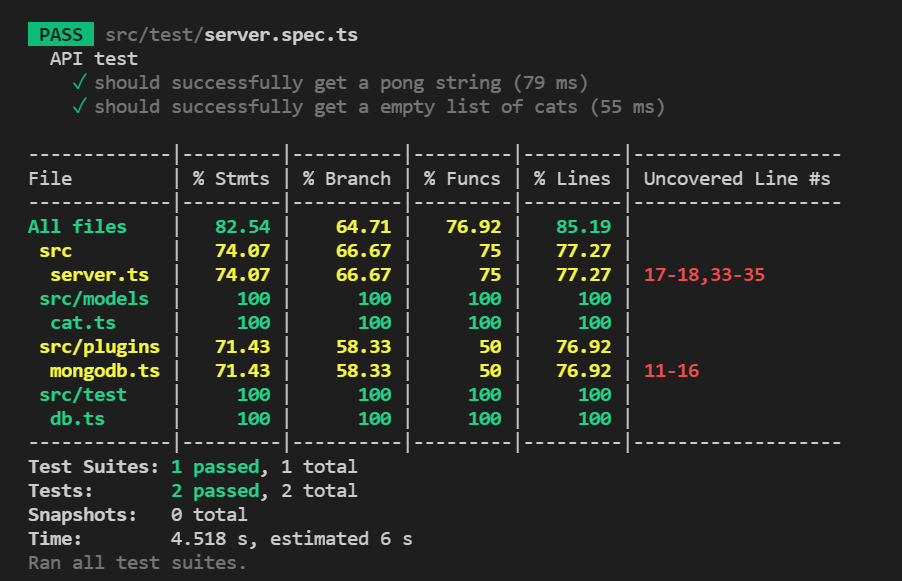
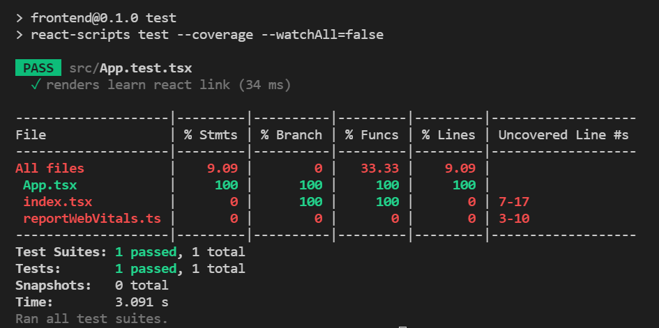
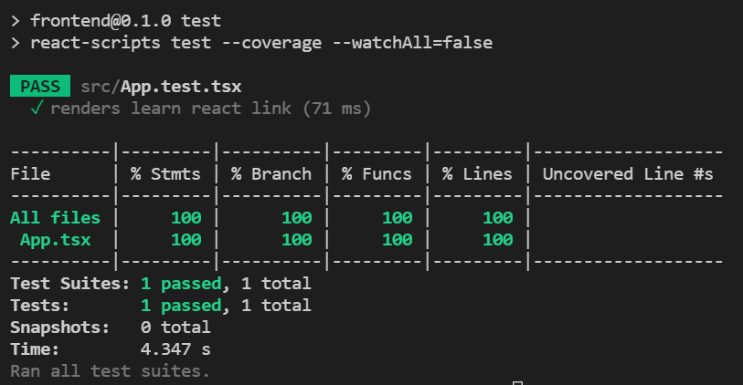

TDD - jest
Jack Lo
TSID / NTAP

Outline
- TDD recap
- jest 101
TDD recap
- write a failing test
- make the test pass
- refactor
Test-Driven Development

Test-Driven Development
- Testing is not a waste of time, it can reduce the cost of development.
- Code against an Interface, not an Implement.
jest 101
jest
- JavaScript testing framework
- Open Source lead by Facebook
- https://github.com/facebook/jest
- https://jestjs.io/
“At Facebook, we use Jest to test React applications.”
Start to test
backend
jest install
npm install -D jest ts-jest @types/jest
jest- JavaScript testing frameworkts-jest- TypeScript preprocessor for jest@types/jest- type definition for jest
test file
- *.spec.*, *.test.*
- js, jsx, ts, tsx, json, node
todo.spec.ts
jest config
https://jestjs.io/docs/configuration
create a file - backend/jest.config.js
module.exports = {
preset: "ts-jest",
transform: {
"^.+\\.(t|j)sx?$": "ts-jest",
},
testEnvironment: "node",
moduleFileExtensions: [
"ts",
"tsx",
"js",
"jsx",
"json",
"node",
],
}
npm script
backend/package.json
"scripts": {
"test": "jest --watchAll --verbose --coverage",
"build": "tsc",
"start": "node out/index.js"
}
npm run test

create test file
create a test folder and file - src/test/server.spec.ts
import { FastifyInstance } from 'fastify'
import { startFastify } from '../server'
import { Server, IncomingMessage, ServerResponse } from 'http'
describe('API test', () => {
let server: FastifyInstance<Server, IncomingMessage, ServerResponse>
beforeAll(async () => {
// await dbHandler.connect()
server = startFastify(8888)
})
// afterEach(async () => {
// await dbHandler.clearDatabase()
// })
afterAll(async () => {
try {
// await dbHandler.closeDatabase()
server.close((): void => { })
console.log('Closing Fastify server is done!')
} catch (e) {
console.log(`Failed to close a Fastify server, reason: ${e}`)
}
})
it('should successfully get a pong string', async () => {
const response = await server.inject({ method: 'GET', url: '/ping' })
expect(response.statusCode).toBe(200)
expect(response.body).toStrictEqual(JSON.stringify({ msg: 'pong' }))
})
})
describe & it
describe('API test', () => {
it('should successfully get a pong string', () => {
// Some testing condition
})
})

describe('API test', () => {
it('should successfully get a pong string', () => {
// Some testing condition
})
it('test B', () => {})
it('test C', () => {})
it('test D', () => {})
})
expect
expect(response.statusCode).toBe(200)
expect(response.body).toStrictEqual(JSON.stringify({ msg: 'pong' }))
toBe()-Object.is- to compare primitive values or to check referential identity of object instances
toStrictEqual()- to test that objects have the same types as well as structure
expect(1 + 2).toBeLessThan(4)
expect(1 + 2).toBeLessThanOrEqual(3)
expect(['A', 'B', 'C']).toContain('B')
expect(1 + 2).not.toBe(4)
Synchronize
describe('Math test', () => {
it('1 + 2 should be 3', () => {
const a = 1
const b = 2
expect(1 + 2).toBe(3)
})
})
Asynchronous
async & await
// pong.ts
async getPong(): Promise<string> {
return new Promise((resolve) => {
resolve('pong')
})
}
// pong.spec.ts
describe('asynchronous test', () => {
it('get pong', async () => {
const result = await pong.getPong()
expect(result).toBe('pong')
})
it('still get pong', async () => {
await expect(pong.getPong()).resolves.toBe('pong')
})
})
in-memory MongoDB
install mongodb-memory-server
npm install -D mongodb-memory-server
create a file - src/test/db.ts
import mongoose from 'mongoose'
import { MongoMemoryServer } from 'mongodb-memory-server'
const mongod = new MongoMemoryServer()
/**
* Connect to mock memory db.
*/
export const connect = async (): Promise<void> => {
await mongod.start()
const uri = mongod.getUri()
const mongooseOpts = {
useNewUrlParser: true,
autoReconnect: true,
reconnectTries: Number.MAX_VALUE,
reconnectInterval: 1000,
poolSize: 10
}
await mongoose.connect(uri, mongooseOpts)
}
/**
* Close db connection
*/
export const closeDatabase: () => Promise<void> = async () => {
await mongoose.connection.dropDatabase()
await mongoose.connection.close()
await mongod.stop()
}
/**
* Delete db collections
*/
export const clearDatabase: () => Promise<void> = async () => {
const collections = mongoose.connection.collections
for (const key in collections) {
const collection = collections[key]
await collection.deleteMany({})
}
}
src/test/server.spec.ts
import { FastifyInstance } from 'fastify'
import { startFastify } from '../server'
import { Server, IncomingMessage, ServerResponse } from 'http'
import * as dbHandler from './db'
describe('API test', () => {
let server: FastifyInstance<Server, IncomingMessage, ServerResponse>
beforeAll(async () => {
await dbHandler.connect()
server = startFastify(8888)
})
afterEach(async () => {
await dbHandler.clearDatabase()
})
afterAll(async () => {
try {
await dbHandler.closeDatabase()
server.close((): void => { })
console.log('Closing Fastify server is done!')
} catch (e) {
console.log(`Failed to close a Fastify server, reason: ${e}`)
}
})
it('should successfully get a pong string', async () => {
const response = await server.inject({ method: 'GET', url: '/ping' })
expect(response.statusCode).toBe(200)
expect(response.body).toStrictEqual(JSON.stringify({ msg: 'pong' }))
})
it('should successfully get a empty list of cats', async () => {
const response = await server.inject({ method: 'GET', url: '/cats' })
expect(response.statusCode).toBe(200)
expect(response.body).toStrictEqual(JSON.stringify({ cats: [] }))
})
})

frontend
npm script
frontend/package.json
"scripts": {
"start": "react-scripts start",
"build": "react-scripts build",
"test": "react-scripts test --coverage --watchAll=false",
"eject": "react-scripts eject"
}
npm run test

jest config
add jest block to frontend/package.json
{
{
...
},
"jest": {
"collectCoverageFrom": [
"src/**/*.{ts,tsx}",
"!src/reportWebVitals.ts",
"!src/index.tsx",
"!src/react-app-env.d.ts"
]
}
}

test case
https://jestjs.io/docs/tutorial-react
src/App.test.tsx
import React from 'react';
import { render, screen } from '@testing-library/react';
import App from './App';
test('renders learn react link', () => {
render(<App />);
const linkElement = screen.getByText(/learn react/i);
expect(linkElement).toBeInTheDocument();
});